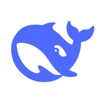

Claude Fable 5.1
Anthropic
Работа с длинными текстами и кодом.
Задачи: текст, код, анализ.
Доступ через сервис.
Подробнее
Например, разобрать длинную статью или найти ошибку в программе.
Цифровая выставка
Открой карточки и сравни результаты тестов.
Смотреть коллекциюНайди модель по названию или разработчику. Для сравнения выбери две карточки.
Найти модельЗадача
Anthropic
Работа с длинными текстами и кодом.
Задачи: текст, код, анализ.
Доступ через сервис.
Подробнее
Например, разобрать длинную статью или найти ошибку в программе.
OpenAI
Помощь с кодом, разбором файлов и объяснением тем.
Задачи: код, анализ, учёба.
Доступ через сервис.
Подробнее
Например, объяснить учебную тему или разобрать небольшой проект.
Быстрая модель Google для чата и задач с кодом.
Задачи: текст, код, учёба.
Доступ через сервис.
Подробнее
Например, составить план текста или объяснить фрагмент кода.

DeepSeek
Принимает текст и изображения. Отвечает текстом.
Задачи: текст, код, анализ.
Веса доступны.
Подробнее
Например, разобрать текст и задать вопросы по изображению.
Qwen
Экспериментальная модель с доступными весами.
Задачи: код, анализ.
Веса доступны (предварительная версия).
Подробнее
Например, проверить работу модели на своей задаче с текстом или кодом.
Mistral AI
Помощь с кодом, документами и изображениями.
Задачи: код, анализ, учёба.
Веса доступны.
Подробнее
Например, разобрать документ или предложить исправление кода.
Для сравнения выбрано 0 из 2 моделей.
Сравнивай оценки за один и тот же тест
В примере используются результаты Artificial Analysis.
AA-LCR v1.1: проверяет ответы на вопросы по длинным документам. Результат показывает долю правильных ответов.
AA-Omniscience Accuracy: показывает долю правильных ответов на фактические вопросы среди всех вопросов теста.
Пример сравнения двух моделей
| Тест | Claude Fable 5.1 | GPT-6 Astra |
|---|---|---|
| AA-LCR v1.1 | 85% | 81% |
| AA-Omniscience Accuracy | 67% | 63% |
Эти числа не обещают такой же результат в обычном чате, общий балл из двух тестов не рассчитывается.
Источники: AA-LCR v1.1, AA-Omniscience, результаты моделей.
О GPT-6 Astra: openai.com/index/gpt-6-astra/
Выбери задачу и напиши тему.
Задача